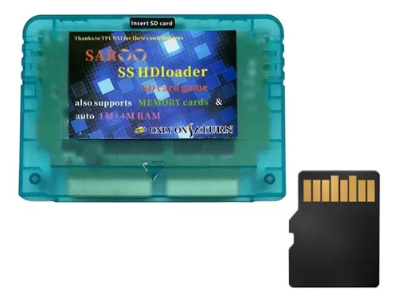

A few years ago I bought myself a Japanese SEGA Saturn off of eBay with a broken disk drive. Recently I've gotten it to run games using a recent flashcart known as a Saroo. This will be doccumenting my attempts to restore and maximize the hardware and Saroo for playing games again. I've already gotten into a good spot with that, but there's places to go and I want to doccument what I've done.
The SEGA Saturn was a 32-bit home console produced by SEGA in 1994 as a competetor for the Sony Playstation. While it's often known for its commercial failure in America, it was quite successful in Japan, planting itself firmly as the second most popular console in the country at the time. It also had a larger install base in Europe, largely due to the popularity of the Master System and Mega Drive there.
The Saroo is a flashcart for the SEGA Saturn, started in 2013, the project began to grow as it went into Beta. However, due to limited success, the project went open-source and was put on hold until semi-recently, when Chinese manufacturers started producing the Saroo. This motivated the creator to revise and update the firmware. The Saroo is the best budget option for running games without the Disk Drive, featuring good compatability and a below 100$ price tag.
The video linked here is a good summary.
https://youtu.be/8VIE47nBa7A?si=XJOO-sEaDpX7-elb

© 2024, All rights reserved.